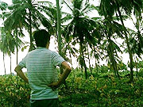
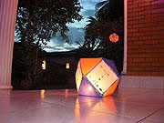

|
「いざスリランカへ！とうとう来た！
出国ゲートを出ると、
ホストマザーの女性が私の名前の入ったプレートを持って待っていました！
かなり感激です！
なんせここで出会えなかったら、私は今晩宿無し。
途方にくれるところですから！
自己紹介をし終えて、私が『お金を両替したい』と伝えると『私の住んでいる街でも両替出来るから。問題無いですよ』と。
|
2人して空港ターミナルを出てスリランカ人男性(ホストマザーの近所のお兄さんで、トゥクトゥクパーツショップ経営)が
運転する車で、ホストマザーの自宅に向かいました。
道中は深夜というのもあって、真っ暗。
あと心の余裕が全く無いので、車窓は全く覚えていません苦笑。
初スリランカ、初対面なのもあり緊張しまくりで、簡単な会話についていくのでやっとでした。
よく覚えていないうちに、彼女の自宅に到着。
部屋を教えてもらって、シャワーを浴びて、そのまま就寝･･･。
とにかく最後はよく分からないまま到着でした！
5月31日ウェサック祭(5月の満月の日) Versak Full Moon Poya Day。
この日は、仏陀の誕生日であり、悟りを開いた事を祝う日。
多くの仏教徒は5つの戒めを守り、厳格な仏教徒は更に3つを足した、8つの戒めを守る日でもある。
スリランカ国民の祝日でもあるので、街の多くのお店がお休み。 |
ランタンの製作途中の写真 |

飾りつけた庭先♪ |
今夜、家やお店をイルミネーションで飾るため、自宅をデコレーションします。
ホストマザーが私に作るのを手伝ってと誘われたので、お手伝いすることに！
メインの飾りは『ランタン』と言われる、日本で言う灯篭です。
お店で購入するか、自宅で作るかをします。
私がお世話になっている家庭では、手作りです。ランタンは八角形の立体的な竹製もしくは鉄製の骨組みに紙を貼っていきます。
|
先週末にいつもの街でパレードがありました。
このパレードはタミル人がメインとなって開催するパレードです。
ご存知ではない方に、少し解説をしますと、スリランカはシンハラ人7割とタミル人3割が住んでいます。
この民族紛争がずっと続いていて、昨年終結致しました。
ホストマザーと英語教師に誘われるまま、夜の街へ行きました。
いつもの幹線道路(片側一車線)に出ると、幹線道路一車線使いながらパレードを行うみたいでした。
先日の祭りVersak Full Moon Poya Dayと同様にたくさんの人が出てきていました。
しばらく待っていると、ハローと声をかけられました。
誰だ？と思っていると、ホストマザーの親族だそうです。
話してみると、20年前？の埼玉県に仕事で行ったことがあるとか。
まさかスリランカの郊外の町で、埼玉・熊谷と言った地名を聞くと思いませんでした。
それにしても驚かされるのは『親族 relative』の多さです。
結婚自体が家同士の結婚という考えが強いせいか、とにかく”relative”の日々連発です。
本当にそうなのかな？と疑うぐらいの”relative”の連発。
未だに真相は分かりません･･･。なんでも”relative”と言っている気もするし笑。
で、いよいよパレードが始まりました。
暗がりで写真が綺麗に撮れなかったので言葉で解説しますと、最初はどこからともなくバチッバチッという音が。
音の主は、民族衣装を着た若者の集団で、道路幅はありそうな鞭を持って、道を叩いていた音でした。
始まりの音みたいな感じですかね？
これがまた怖い！なんせ道路一杯使って鞭を振るので歩道で見ている方はビビリまくりです。
次は楽器演奏隊です。
民族衣装を着て、演奏し、歌い踊っています。
その後には、どこの国でもありがちな光景。
一緒に参加している若者グループです笑。
自分達の世界でスッゴイ楽しんでいました。
いやぁ元気！元気！
今の日本じゃない光景！踊って騒いでかなり楽しんでました！
続いては、足に竹馬をくくりつけて歩く民族衣装をつけたグループ。
すっごい上手で、器用に歩いたり技を見せつけてくれました。 |
|
一番驚いたのは『象』
衣装を身につけて、象使いの人と一緒に歩いてました。
手の届くところでしかも道路を歩いている象なんて初めて見たので感動！
その後を、ヒンドゥー教の神様を飾りつけた車列。
車にはヒンドゥー教のお坊様も乗っているので、沿道からは、お供え等を持ってかけよる信者さんがたくさん。
お坊さんが、その方々のおでこに印をつけていました。
おそらく聖なる力をもらえるという所でしょう。
それにしても、こんなにも人が集まっているにも関わらず、外国人と思われるのは、おそらく私1人。我ながら目立って目立って仕方が無い！
1人背が高いし、色白だし、現地の方から見ると明らかに外国人。
私を見て驚く子供や、笑顔をふりまく人、パレードを歩いてる人からも“where do you come from?” と言われるので、”from JAPAN”と。
|
今週スリランカ首都のコロンボへ初めて行く。
いかにもアジア！という雑踏と灼熱さと熱気に圧倒されまくり。
エネルギーを感じた。
こういう活気がある国の勢いは、今の日本には無いなぁ～と実感。
皆元気！元気！
人間の凄さを感じる日々です！
首都と思えない絵かもしれませんが、活気は凄いです！
買い物する人、行きかう商人や荷車、飛び交う声、焼き付けるような日差し。
ボーっと立っていると怒られるような雰囲気。
活気を感じる、まさしくアジアの喧噪です。
このメインストリートではどこに目を向けても、同じ気持ちに浸れます。
異国の地に来ているのだと、心底感じます。 |
昨日、ホストマザーの知り合いに会いに行く。
その際、英語で自己紹介。
見ず知らずの人に英語で話したのは初めて！
5分程だったが、スムーズに会話している自分がスゴイ！ホストマザー兼英語教師も95点くれました。なぜ満点じゃないのか・・・その理由は秘密です笑。」
|